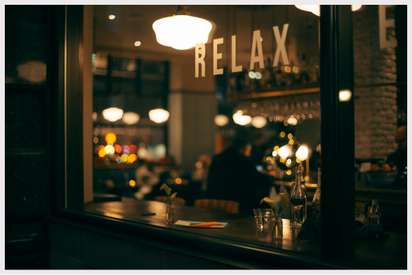
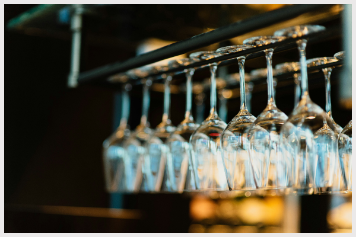
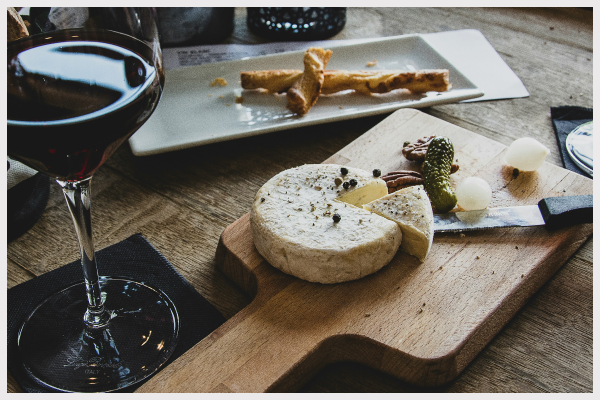
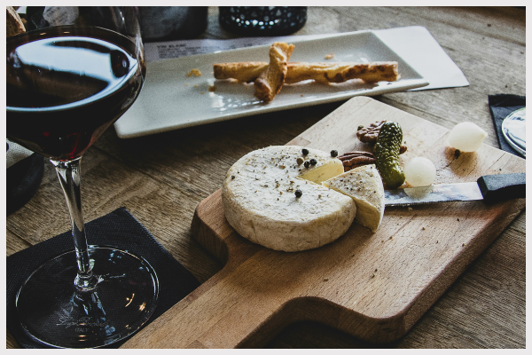

Dine &Wine
restaurant
Atmosphere
Step into Wine & Dine and feel the warmth of a cozy, intimate setting where elegance meets comfort. Soft lighting, inviting interiors, and the gentle hum of conversation create the perfect backdrop for unforgettable moments. Whether it’s a romantic evening or a gathering with friends, Wine & Dine offers an ambiance that makes you want to stay just a little longer.



 
